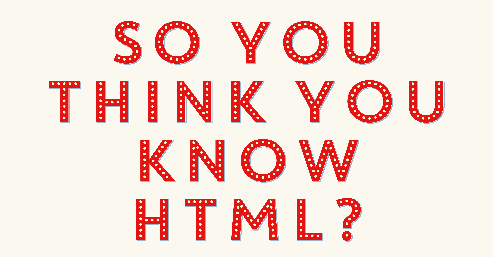

Recently I was asked what programming language I recommended for those wanting to get started with the web, and very quickly I got in trouble for suggesting HTML, because it's "not real programming" or "just a markup language".
HTML has been around for over 25 years, and forms the building blocks of the web.
While I accept that HTML is a markup language, you're intending to work with the web, it's a great place to start, as knowledge of how the language works is required to use other languages like CSS, JavaScript and even PHP.
Just because HTML is a markup language, doesn't mean it shouldn't get attention like the "more fun" CSS and JavaScript.
But when was the last time you looked at a new HTML standard? Do you know the right element to use for an audio file? For a definition? How about for an address or a status bar?
Good HTML is key for Accessibility
HTML elements aren't just for us to put content in, or a way to target something in our CSS and JavaScript. Semantically correct HTML is essential for your website to be read by a screen reader. The reader knows what kind of content to expect from certain elements and interprets them for the user.
And remember, screen readers aren't the only type of assistive technology being used. Have you considered how you site might be consumed by an assistive technology, like a Braille reader?
Is this text bold or this text ?
Is this text italic, or this text ?
For example, you normally use bold or italic text for emphasis, but if someone is using a screen reader, how will they know this?
`b` and `i` only dictate how the content will look, but screen readers will ignore these tags and read the content as usual. But if you use `strong` or `em` instead, they're semantic tags that the screen reader will interpret and read the content differently (sometimes in a different voice).
So next time you think Accessibility is too hard or too much work, take little step and make sure that you're using the right element.
Google cares about your HTML too!
Semantic HTML isn't just about accessibility though, how you structure your site affects how it's used by an increasing range of technology other than screen readers, such as voice recognition software and your smartwatch. Even your SEO is affected by whether you've written your HTML properly.
Download Catalogue
Link Clickable Div
Download Button Clickable Span
Download Catalogue
Download Catalogue
Download Catalogue
The issue with using a div, is that it's a layout element, and therefore won't get focus when someone navigates to it with their keyboard. While you can hack to make a div clickable, why bother going to all that trouble when there's already an element to suit your purpose?
While they're often used interchangeably, a button should be used to trigger an action, or for a toggle. The anchor tag on the other hand should be used to link somewhere else, whether that be another part of the page, another page, a file, email address or phone number.
If you want to change the way something looks on your website, that's when you should be using CSS. Don't use a h6 because it's the size you want it, just make the h2 smaller!
My Christmas List
Item 1
Item 2
Item 3
Item 4
Item 5
...
Item 199
Item 200
Item 201
My Christmas List
Item 1
Item 2
Item 3
Item 4
Item 5
...
Item 199
Item 200
Item 201
The only thing that divs and spans do is apply display block or inline to the element, once again, they're for layout only.
Screen readers don't just read through a page, they take into account everything available, give you lists of headings, controls for table and let you know about the list they're about to read.
When you use a div or span for things that require interaction, like buttons, headings or tables, they can't be translated into a more usable format and are relying on formatting only.
When the screen reader approaches a list, it lets the user know what kind of list they're about to read, and how many items are in it. Imagine what it's like to get stuck in the middle of an unsemantec list, with no way to get out because the screen reader just sees a heap of divs and doesn't know where the end is?
Down Town
Definition Term
Description Term
David Thomas
Definition List
A definition list is often used in glossaries or similar.
Description List
The same thing, they are known by different names
Name
Amy
Birthplace
Wondai, Queensland
Favourite Colour
Purple
Pets
Remi (dog)
Definition List
A definition list is often used in glossaries or similar.
Description List
The same thing, they are known by different names
Name
Amy
Birthplace
Wondai, Queensland
Favourite Colour
Purple
Pets
Remi (dog)
One of the lesser known list siblings, definition (or description) list comprises of the `dl`, `dt` and `dd` elements are used to define the term and the definition or description being used.
These elements are used to define a group of terms, like in a glossary or to show meta data (where you have a list of key-value pairs).
Layouts
Data
Email Templates
Nightmares
Fenders Organiser
Favourite Colour
Amy Purple
Ben Black
DT Green
Jess Blue
Mandy Purple
Fenders Organiser
Favourite Colour
Amy
Purple
Ben
Black
DT
Teal
Jess
Black
Mandy
Purple
Tables have developed a bad rap because of their overuse in layouts (and the nightmare they create in email templates), but they still have a secret superpower that most of us don't know about.
DATA!
If something should look like a table, and you would expect to see it in a table, put it in a table! You won't be mocked for using a table element exactly as it was intended.
Although most forms end up with the field names as placeholders (it looks so much nicer that way), someone using a screen reader can't read the text in the field, and the screen reader doesn't know what the field is for so it can tell them. Even if your designer doesn't want to use a label, they can be hidden so that only screen readers pick them up on the page.
Legends also allow us to dictate the title of a form, similar to how a heading is often used, but specific to that particular form. As an input field gets a label, a form should have a legend.
Tables
Lists
Forms
Meta Info
Strikethrough
Highlight
Signature
Markdown
This is useful to make this text highlighted to stand out
This is useful to make this text highlighted to stand out
While we don't often see highlighted text on the web, it's an tool that can be used to highlight something that's important other than using bold or italic styling. This works better than just assigning a background, keeping with the text itself (especially if it's multi-line).
Videos
Pictures
Code
Audio
In the world of responsive design and infinite device sizes, the picture element helps us to serve up different image sizes depending on the size of the device.
Similar to CSS media queries, the `source` elements dictate different screen sizes and the image to use, with a fallback image at the end.
The Queen
Quiz
Quote
Quota
When doing research, I read a great quote HTML is the backbone of the web. Or rather, the forgotten backbone by our own Julie Grundy.
Three common accessibility pitfalls for developers: information and relationships, Julie Grundy (2016)
When doing research, I read a great quote HTML is the backbone of the web. Or rather, the forgotten backbone by our own Julie Grundy.
Three common accessibility pitfalls for developers: information and relationships, Julie Grundy (2016)
Depending on the types of sites you're working on, you may not use quotes very often, but if my time at uni taught me anything, it's to make sure you're always referencing them properly.
In inline quotation element is useful for quotes that don't need to be separated (as you'd use the blockquote element). Often browsers will enclose the element in quotation marks as well.
This element should go hand in hand with the cite element to show where you got it from. Depending on which specification you follow, you may or may not use the author's name (W3C says you can, WHATWG says absolutely no).
When you use semantically correct HTML, you're empowering people so they can find what they want faster and more easily
Three common accessibility pitfalls for developers: information and relationships, Julie Grundy (2016)
When you use semantically correct HTML, you're empowering people so they can find what they want faster and more easily
Three common accessibility pitfalls for developers: information and relationships, Julie Grundy (2016)
The cite element works the same way when using a blockquote to show a longer quote.
HTML5 Support
95%
88%
88%
56%
93%
85%
88%
80%
84%
87%
75%
93%
The advantage of using new HTML specs, is that you don't have the same disadvantages to using an element that doesn't yet have great support. When using something new in CSS or JavaScript, it's often difficult to implement a less supported technology into a production environment and you need to take into account any fallbacks needed. But HTML is forwards compatible, so if the browser doesn't recognise a tag it's been given, the content inside the tag will render just the same.
Unfortunately, once again IE is being difficult with this requirement, and will refuse to apply styles to unrecognised tags or allow them to be used as a CSS selector.
Technology doesn't actually care what an element looks like, so make sure you give it the right element to interpret, and then use the tools at your disposal to make it look the way you want it to. Remember, there are people using your site differently to how you do, and in ways you won't expect.
Even if you think the recommended element doesn't work for you, remember that you need to think about things other than how it looks, or what cool trick it does.
- Can someone access it with a mouse?
- What about a keyboard?
- Is it obvious if the focus changes?
- Does it give feedback to the user on what's happening?
We don't know how people are going to use our website, but no matter what they use it will be consuming our HTML. To allow this, we need to make sure that our HTML is semantic and logical from the very beginning, otherwise you're just building a site on dodgy foundations.
So don't be afraid to check out the latest HTML spec, read up on something new or stay up to date with changes in the HTML standards. It's changing with the times (although not quite as fast as JavaScript is), and we need to keep up otherwise we might be making things harder for ourselves (and those trying to use our site).